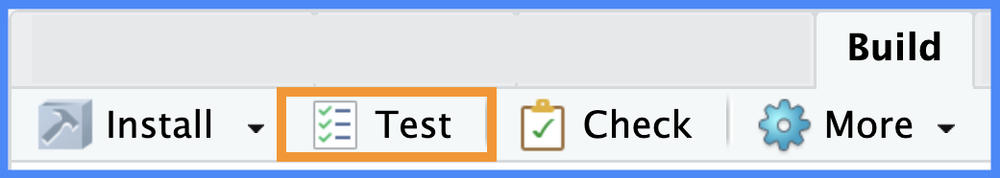

install.packages(c("testthat", "shinytest2", "covr"))
library(testthat)
library(shinytest2)
library(covr)Tests
Caution!
This section is currently being revised. Thank you for your patience.
Testing shiny app-packages poses some unique challenges. Shiny functions are written in the context of its reactive model,1 so some standard testing techniques and methods for regular R packages don’t directly apply. Fortunately, the infrastructure for storing and running tests in app-packages is identical to a standard R package.
This chapter will cover the differences between user specifications, feature requirements, and functional requirements. I’ll introduce how you can use testthats behavior-driven development (BDD)2 and a traceability matrix to map each functional requirement to a specific test, ensuring that all user’s needs are met (and the app’s features implemented correctly).
I’ll give examples for three types of testing: unit tests, integration/module tests, and end-to-end or system tests, focusing on what to test and why to test it, not how to write tests (plenty of those resources exist3 4 5), the only exception is some tricks I’ve learned for using testServer() with module server functions.6
The code chunk below will load the necessary testing packages.
(If you’re using devtools, you won’t have to worry about installing testthat and covr)
User Specifications & Requirements
When you begin developing a Shiny app-package, you’ll be faced with two questions:
- What do I test?
- How do I test it?
Applications should have accompanying resources to help address these questions, the most common being a software requirements specification (SRS) document. The SRS typically breaks down an application’s intended purpose (i.e., the problem it’s designed to solve) into three general areas: user specifications, feature requirements, and functional requirements:
The user specifications capture the needs and expectations of the end-user. These are usually non-technical and focused on the “why” and the “what” of the application.
The feature requirements list the high-level capabilities of the application. Features are defined early in the life of a project and become the talking points during discussions with stakeholders to be used for scoping and prioritization. Because their scope can be broad, they may be composed of various functional (and sometimes even non-functional).
Functional requirements are the testable, specific actions, inputs, and outputs. Functional requirements provide the technical details of how the features will be implemented, and a single feature can give rise to multiple functional requirements.
These guidelines direct the development process, albeit from slightly different perspectives. Understanding the interplay between user specifications, functional requirements, and feature requirements is essential for helping developers know if the application meets the technical standards and satisfies the user’s needs.
I’ll use shinyAppPkg to illustrate a brief example of each in the sections below:
User Specifications
User Specifications are what the end-user (in this case, a film analyst) wants to achieve with the application.7
Feature Requirements
The feature requirement translates the end user’s expectation into specific language describing an application capability (i.e., display a scatter plot), phrased to satisfy a specific end-user need outlining in the specifications.8
Functional Requirements
The Functional Requirements are written for the developer and provide technical details on how the feature (i.e., the scatter plot) should behave and what it needs to do. These requirements are written for developers and represent where the end-users’ expectations come into direct contact with code.9
Traceability matrix
A traceability matrix is a table that ‘traces’ the user specifications to features and functional requirements (and the tests they give rise to) to verify that the application has been developed correctly. Package vignettes are a great place to store a draft of the traceability matrix, and they can be quickly created using usethis::use_vignette():

This section’s code is in the shinyAppPkg repo’s 08_tests-specs branch
usethis::use_vignette("test-specs")Adding our first vignette to the vignettes/ folder does the following:
Adds the
knitrandrmarkdownpackages to theSuggestsfield inDESCRIPTION10Suggests: knitr, rmarkdownAdds
knitrto theVignetteBuilderfield11VignetteBuilder: knitrAdds
inst/docto.gitignoreand*.html,*.Rtovignettes/.gitignore12
We want to use the traceability matrix to ensure the tests cover all the functionalities (i.e., the code) and address the user specifications and that every user need corresponds to a functionality that’s been tested.
User specs & features
We’ll start with the user specifications. The language used for these descriptions is non-technical but should provide a basis for deriving the more technical (but still high-level) feature requirements.13
| User Specification | Feature Requirement | Functional Requirements |
|---|---|---|
| US1: scatter plot data visualization | FE1: interactive scatter plot (two data sources, drop-down variable options) | - |
Functional requirements
A single feature often produces multiple functional requirements.
| User Specification | Feature Requirement | Functional Requirements |
|---|---|---|
| US1: scatter plot data visualization | FE1: interactive scatter plot (two data sources, drop-down variable options) | FR1: data source |
| - | - | FR2: user-input updating |
| - | - | FR3: color-coded data points |
| - | - | FR4: plot axis, legend & title |
Tests
After translating the user needs into technical requirements, we can quickly identify what needs to be tested.
| User Specification | Feature Requirement | Functional Requirements | Tests |
|---|---|---|---|
| US1: scatter plot data visualization | FE1: interactive scatter plot (two data sources, drop-down variable options) | FR1: data source | T1 |
| - | - | FR2: user-input updating | T2 |
| - | - | FR3: color-coded data points | T3 |
| - | - | FR4: plot axis, legend & title | T4 |
The matrix allows us to ensure:
The user specifications have accompanying feature requirements.
Each feature has been broken down into precise, measurable, and testable functional requirements.
Tests have been written for each functional requirement.
If you’d like, you can include additional columns to track whether the test has passed:
| User Specification | Feature Requirement | Functional Requirements | Tests | Test Status |
|---|---|---|---|---|
| US1: scatter plot data visualization | FE1: interactive scatter plot (two data sources, drop-down variable options) | FR1: data source | T1 | FR1 test status: |
| - | - | FR2: user-input updating | T2 | FR2 test status: |
| - | - | FR3: color-coded data points | T3 | FR3 test status: |
| - | - | FR4: plot axis, legend & title | T4 | FR4 test status: |
Vignettes are a great place to store this information because it’s self-contained and travel with the package whenever the code is updated.14
The following section covers setting up tests with testthat, the structure of unit tests, and additional elements you should consider using in your app-package.
testthat framework
Multiple strategies exist for writing tests. For example, if you’ve adopted test-driven development (TDD),15 you’ll write tests before developing utility functions, modules, or a standalone app function.
Regardless of the testing strategy you choose, I recommend setting up the testing infrastructure in our app-package with the testthat package:
use_testthat()
In packages using devtools, the testing infrastructure can be built with usethis::use_testthat():
usethis::use_testthat()- In the
DESCRIPTIONfile,testthat (>= 3.0.0)is listed underSuggestsandConfig/testthat/edition: 3is used to specify thetestthatedition
Suggests:
testthat (>= 3.0.0)
Config/testthat/edition: 3- A new
tests/folder is created, with atestthat/subfolder. Thetestthat.Rfile is created (which is sometimes referred to as the ‘test runner,’ because it runs all our tests).
tests/
├── testthat/
└── testthat.R
2 directories, 1 file- 1
- Test runner
use_test() unit tests
New tests are created with usethis::use_test().16
usethis::use_test("scatter_plot")test- files
- Test files: the IDE will automatically create and open the new test file:
✔ Writing 'tests/testthat/test-scatter_plot.R'
• Modify 'tests/testthat/test-scatter_plot.R'test_that() tests
- Tests: Each new test file contains a boilerplate
test_that()test, withdesc(the test context) andcodearguments (supplied in curly brackets).
test_that(desc = "multiplication works", code = {
})expect_ations
- Expectations: most expectation have two parts: an
observedobject, and anexpectedobject. Theobservedobject is an artifact of some code you’ve written, and it’s being compared against anexpectedresult.
expect_equal(
object = 2 * 2,
expected = 4
) - 1
- The test expectation
- 2
- What is observed (i.e., the value or object)
- 3
- What was expected (i.e., the predefined criteria for success)
Running tests
- Running tests: Another
devtoolshabit to adopt is regularly writing and running tests. If you’re using Posit Workbench and havedevtoolsinstalled, you can test your app-package using the Build pane or the keyboard shortcut:
Ctrl/Cmd + Shift + T

devtools::test() (run all tests in your tests/ folder)When the test is run, you’ll see feedback on whether it passes or fails (and some encouragement):
test_that("multiplication works", {
expect_equal(
object = 2 * 2,
expected = 4
)
})
## Test passed 🎉Now that we have our testing framework and the traceability matrix to guide development, I will cover a slightly different approach to testing that I’ve found helpful with app-packages (and has excellent support in testthat).
Behavior-driven development
Behavior-driven development (BDD) (or behavior-driven testing) is a methodology that involves collaboration between developers, users, and domain experts to define requirements and write tests using domain-specific language. The BDD approach emphasizes writing human-readable descriptions of the application’s behavior, which is then converted into a series of tests.
“[BDD] encourages teams to use conversation and concrete examples to formalize a shared understanding of how the application should behave.” - BDD, Wikipedia
Behavior-driven testing can be performed using a testthat’s describe() and it() functions.17 Below is an example of how these might look for the US1 user specification in shinyAppPkg:
describe()
The testthat::describe() function follows a BDD format and ‘specifies a larger component or function and contains a set of specifications’
In describe(), I’ll reference the feature I’m testing (FE1):
| User Specification | Feature Requirement |
|---|---|
| US1: scatter plot data visualization | FE1: interactive scatter plot (two data sources, drop-down variable options) |
testthat::describe(description = "FE1: interactive scatter plot", code = {
})it()
Inside describe(), we can include multiple it() blocks which “functions as a test and is evaluated in its own environment.”
In the example below, I use it() blocks to test each functional requirement:18
| Feature Requirement | Functional Requirements |
|---|---|
| FE1: interactive scatter plot (two data sources, drop-down variable options) | FR1: data source |
| - | FR2: user-input updating |
| - | FR3: color-coded data points |
| - | FR4: plot axis, legend & title |
testthat::describe(description = "FE1: interactive scatter plot", code = {
testthat::it(description = "FR1: data source", code = {
# test code
testthat::expect_equal(object = , expected = )
})
testthat::it(description = "FR2: user-input updating", code = {
# test code
testthat::expect_equal(object = , expected = )
})
testthat::it(description = "FR3: color-coded data points", code = {
# test code
testthat::expect_equal(object = , expected = )
})
testthat::it(description = "FR4: plot axis, legend & title", code = {
# test code
testthat::expect_equal(object = , expected = )
})
})Next we’re going to cover two additional testing tools (fixtures and helpers) you can include in your test suite to make testing your app-package a little easier.
Fixtures
This section’s code is in the shinyAppPkg repo’s 08_tests-helpers-fixtures branch
Test fixtures are various resources used to ensure a consistent, well-defined environment. Fixtures can be input data, database connections, R options, environment variables, or anything else needed to create a repeatable infrastructure (even when the test is run on different environments or setups).
A good test fixture also ‘cleans itself up’ after the test has been run to make sure any changes made during the test doesn’t persist or interfere with other tests in your app-package.19
In R/ packages, test fixtures are stored in the tests/testthat/fixtures/ folder:
tests/
├── testthat/
│ └── fixtures/
└── testthat.R- 1
-
The name ‘
fixtures’ isn’t required (you can name this folder anything)
Test data
The code used to create test data files should also be stored in tests/testthat/fixtures/ with a clear naming convention. I’ve provided the code used to tidy ggplot2movies::movies as an example data fixture below:20
show/hide make-ggp2-movies.R
# pkgs <- c('ggplot2movies', 'tidyr', 'dplyr', 'stringr', 'purrr')
# install.packages(pkgs, quiet = TRUE)
# load packages --------------------
library(tidyr)
library(dplyr)
library(stringr)
library(purrr)
ggp2movies <- ggplot2movies::movies |>
pivot_longer(c(Action:Short),
names_to = "genre_key",
values_to = "genre_value"
) |>
dplyr::mutate(genre_value = as.logical(genre_value)) |>
dplyr::select(
title, genre_key, genre_value, length,
year, budget, avg_rating = rating, votes, mpaa
) |>
dplyr::filter(genre_value == TRUE) |>
group_by(title) |>
dplyr:::mutate(
genres = paste0(genre_key, collapse = ", ")
) |>
dplyr::select(
title, genres, length, year,
budget, avg_rating, votes, mpaa
) |>
dplyr::ungroup() |>
dplyr::distinct(.keep_all = TRUE) |>
dplyr::mutate(
genres = dplyr::na_if(x = genres, ""),
genres = factor(genres),
mpaa = dplyr::na_if(x = mpaa, y = ""),
mpaa = factor(mpaa,
levels = c("G", "PG", "PG-13", "R", "NC-17"),
labels = c("G", "PG", "PG-13", "R", "NC-17")
)
) |>
tidyr::drop_na()
# save to tests/testthat/fixtures/
saveRDS(object = ggp2movies, file = "tests/testthat/fixtures/ggp2_movies.rds") tests/
└── testthat/
└── fixtures/
├── ggp2_movies.rds
└── make-ggp2-movies.R
3 directories, 2 files- 1
-
The code used to create the test data (
make-ggp2-movies.R) is stored in the same location as the output it creates (i.e.,ggp2_movies.rds):
Helpers
Test helpers are functions code that make creating and running tests easier.
“Helper files are a mighty weapon in the battle to eliminate code floating around at the top-level of test files.” Testthat helper files, R Packages, 2ed
App input helpers
The var_inputs() function below is a test fixture we can use to create inputs for the scatter_plot() utility function:
var_inputs <- function() {
list(
y = "audience_score",
x = "imdb_rating",
z = "mpaa_rating",
alpha = 0.5,
size = 2,
plot_title = "Enter plot title"
)
}
var_inputs()$x
## [1] "imdb_rating"We can also create a helper for the tidy ggplot2movies::movies data:
ggp2_inputs <- function() {
list(
x = "avg_rating",
y = "length",
z = "mpaa",
alpha = 0.75,
size = 3,
plot_title = "Enter plot title"
)
}
ggp2_inputs()$x
## [1] "avg_rating"Using a function to derive test inputs is especially helpful when testing module server function because we don’t need to change the way we refer to reactive inputs (as you’ll see below).
Functions like var_inputs() and ggp2_inputs() can be stored in tests/testthat/helper.R, which is automatically loaded with devtools::test():
tests/
└── testthat/
├── fixtures/
│ ├── make-ggp2-movies.R
│ └── ggp2_movies.rds
├── helper.R
└── test-scatter_plot.R- 1
-
Test data script and
.rdsfile
- 2
-
var_inputs()andggp2_inputs()functions
- 3
- Test file
The next section demonstrates how to use test fixtures and helpers with testthat’s behavior-driven development functions (describe() and it()) and the contents of the traceability matrix.
Example: testing outputs
If we wanted to confirm the scatter_plot() function returns a ggplot2 object (i.e., with is.ggplot()) the describe() andit() code would look something like this:
testthat::describe(description = "FE1: interactive scatter plot", code = {
testthat::it(description = "FR1: data source", code = {
p <- scatter_plot(movies,
x_var = var_inputs()$x,
y_var = var_inputs()$y,
col_var = var_inputs()$z,
alpha_var = var_inputs()$alpha,
size_var = var_inputs()$size
)
testthat::expect_true(object = ggplot2::is.ggplot(p))
})
})This test answers the question, ‘does the plot generate without producing an error,’21 which is appropriate because this is a test of the data source (movies), not necessarily the graph output.
We can also use a nested describe() chunk to load and test a second data source (i.e., the ggplot2movies::movies data):22
testthat::describe(description = "US1: scatter plot data visualization", code = {
testthat::describe(description = "FR1: data source (movies)", code = {
testthat::it(description = "T1: movies data source", code = {
p <- scatter_plot(movies,
x_var = var_inputs()$x,
y_var = var_inputs()$y,
col_var = var_inputs()$z,
alpha_var = var_inputs()$alpha,
size_var = var_inputs()$size
)
expect_true(object = ggplot2::is.ggplot(p))
})
})
testthat::describe(description = "FR1: data source (ggp2_movies)", code = {
testthat::it(description = "T2: ggp2_movies.rds data source", code = {
ggp2_movies <- readRDS(test_path("fixtures", "ggp2_movies.rds"))
p <- scatter_plot(ggp2_movies,
x_var = ggp2_inputs()$x,
y_var = ggp2_inputs()$y,
col_var = ggp2_inputs()$z,
alpha_var = ggp2_inputs()$alpha,
size_var = ggp2_inputs()$size
)
expect_true(object = ggplot2::is.ggplot(p))
})
})
})- 1
-
User specification
- 2
-
moviesdata component
- 3
-
Test
moviesdata withvar_inputs()helper
- 4
-
ggp2_moviesdata component
- 5
-
Load
ggp2_movies.rdstest fixture withtestthat::test_path()
- 6
-
Test
ggp2_moviesdata withggp2_inputs()helper
Example: snapshot tests
This section’s code is in the shinyAppPkg repo’s 08_tests-snapshots branch
If the expected output we’re interesting in testing is cumbersome to describe programmatically, we can consider using a snapshot tests. Examples of this include UI elements (which are mostly HTML created by Shiny’s UI layout and input/output functions) and data visualizations.23
Writing tests for graph outputs can be difficult because the “correctness” of a graph is somewhat subjective and requires human judgment.
In cases like this, a snapshot test might be warranted. The vdiffr package allows us to perform a ‘visual unit test’ by saving by capturing the expected output as a snapshot that we can compare with future versions.
vdiffr
The expect_doppelganger() function from vdiffr is designed specifically to work with ‘graphical plots’.
vdiffr::expect_doppelganger(
title = "name of graph",
fig = # ...code to create graph...
)Test logging
I like verbose test output, so I’ve created a test_logger() helper function that let’s me give more context and information for each test:
# test logger helper
test_logger <- function(start = NULL, end = NULL, msg) {
if (is.null(start) & is.null(end)) {
cat("\n")
logger::log_info("\n[{Sys.time()}| {msg}]")
} else if (!is.null(start) & is.null(end)) {
cat("\n")
logger::log_info("\n[ START | {start} = {msg}]")
} else if (is.null(start) & !is.null(end)) {
cat("\n")
logger::log_info("\n[ END | {end} = {msg}]")
} else {
cat("\n")
logger::log_info("\n[ START | {start} = {msg}]")
cat("\n")
logger::log_info("\n[ END | {end} = {msg}]")
}
}test_logger() can be used to ‘log’ the start and end of each test, and it includes a message argument (msg) I use to match the test context.24
In this test, I’ll use testthat::describe() to list the feature from the traceability matrix (FE1), followed by a testthat::it() with each functional requirement the snapshot will capture.
| Feature Requirement | Functional Requirements |
|---|---|
| FE1: interactive scatter plot (two data sources, drop-down variable options) | FR1: data source |
| - | FR2: user-input updating |
| - | FR3: color-coded data points |
| - | FR4: plot axis, legend & title |
testthat::describe("FE1: interactive scatter plot", code = {
testthat::it("Has color (FR3) & axis/legend/title (FR4)", code = {
test_logger(
start = "T3",
msg = "Tests FR3 & FR4"
)
vdiffr::expect_doppelganger(
title = "scatter_plot() + theme",
fig = scatter_plot(movies,
x_var = var_inputs()$x,
y_var = var_inputs()$y,
col_var = var_inputs()$z,
alpha_var = var_inputs()$alpha,
size_var = var_inputs()$size
) +
ggplot2::labs(
title = var_inputs()$plot_title,
x = stringr::str_replace_all(
tools::toTitleCase(
var_inputs()$x), "_", " "),
y = stringr::str_replace_all(
tools::toTitleCase(
var_inputs()$y), "_", " ")
) +
ggplot2::theme_minimal() +
ggplot2::theme(legend.position = "bottom")
)
test_logger(
end = "T3",
msg = "Tests FR3 & FR4"
)
})
})- 1
-
Feature description
- 2
-
Non-technical language for functional requirements
- 3
-
Test logger (
start)
- 4
-
Snapshot with
moviesandvar_inputs()
- 5
-
Test logger (
end)
The test results have the results from test_logger(), and we see warning that the snapshot has been saved in the tests/testthat/_snaps/ folder:
[ FAIL 0 | WARN 0 | SKIP 0 | PASS 0 ]
INFO [2023-09-26 23:16:52] [ START | T1 = Tests FR1]
[ FAIL 0 | WARN 0 | SKIP 0 | PASS 1 ]
INFO [2023-09-26 23:16:52] [ END | T1 = Tests FR1]
INFO [2023-09-26 23:16:52] [ START | T2 = Tests FR1]
[ FAIL 0 | WARN 0 | SKIP 0 | PASS 2 ]
INFO [2023-09-26 23:16:52] [ END | T2 = Tests FR1]
INFO [2023-09-26 23:16:52] [ START | T3 = Tests FR3 & FR4]
[ FAIL 0 | WARN 1 | SKIP 0 | PASS 3 ]
INFO [2023-09-26 23:16:52] [ END | T3 = Tests FR3 & FR4]
─ Warning (test-scatter_plot.R:54:5): Has color (FR3) & axis/legend/title (FR4) ─
Adding new file snapshot: 'tests/testthat/_snaps/scatter-plot-theme.svg'
[ FAIL 0 | WARN 1 | SKIP 0 | PASS 3 ]On subsequent runs, this warning will disappear (as long as there are no changes to the scatter-plot-theme.svg file).
We can also update the traceability matrix with the tests used to verify the functional requirements:
| User Specification | Feature Requirement | Functional Requirements | Tests |
|---|---|---|---|
| US1: scatter plot data visualization | FE1: interactive scatter plot (two data sources, drop-down variable options) | FR1: data source | T1 & T2 |
| - | - | FR2: user-input updating | - |
| - | - | FR3: color-coded data points | T3 |
| - | - | FR4: plot axis and legend | T3 |
Example: testing modules
The BDD functions also allow us to combine tests for reactive interactions with testServer(), which means we can include tests to verify the inputs, outputs, and returned values from module server functions.
For example, functional requirement #2 (FR2) is a user created behavior.
To confirm the user-inputs are updating in the application, we need to test three changes:
- An initial
NULLvalue inmod_var_input_server() - The returned values from the
mod_var_input_server()
- The final value collected in
mod_scatter_display_server()
list of graph inputs from mod_var_input_server(), we can build the list of inputs, then pass identical values to session$setInputs() and confirm the returned object with session$returned():
shiny::testServer(app = mod_var_input_server, expr = {
test_vals <- list(
y = "audience_score",
x = "imdb_rating",
z = "genre",
alpha = 0.5,
size = 2,
plot_title = "example title"
)
session$setInputs(
y = "audience_score",
x = "imdb_rating",
z = "genre",
alpha = 0.5,
size = 2,
plot_title = "example title"
)
test_logger(start = "returned(var_input)", msg = "var_input structure")
testthat::expect_equal(
object = session$returned(),
expected = test_vals
)
})This confirms the structure of the returned object from mod_var_input_server().
args = list()
Now that we’ve confirmed the returned values from mod_var_input_server() are in a list, we want to make sure it’s read correctly by the var_inputs argument in mod_scatter_display_server(). I’ve included the movies_server() function below refresh our memory of how this should work:25
movies_server <- function(input, output, session) {
selected_vars <- mod_var_input_server("vars")
mod_scatter_display_server("plot", var_inputs = selected_vars)
}When we pass selected_vars to the var_inputs argument of mod_scatter_display_server(), we’re not passing the returned values (this is why we don’t need the parentheses). We’re calling on the method (or function) created by reactive().
If we pause execution with the debugger,26 we can see the difference between calling selected_vars and selected_vars():
Browse[1]> selected_vars
reactive({
list(
y = input$y,
x = input$x,
z = input$z,
alpha = input$alpha,
size = input$size,
plot_title = input$plot_title
)
})
Browse[1]> selected_vars()
$y
[1] "audience_score"
$x
[1] "imdb_rating"
$z
[1] "mpaa_rating"
$alpha
[1] 0.5
$size
[1] 2
$plot_title
[1] ""This distinction becomes important when we’re testing the communication between module server functions.
test_vals <- list(x = "audience_score",
y = "imdb_rating",
z = "mpaa_rating",
alpha = 0.5,
size = 2,
plot_title = "Test title case")
shiny::testServer(
app = mod_scatter_display_server,
args = list(
var_inputs = shiny::reactive(test_vals)
), expr = {
test_logger(start = "mod_scatter_display_server", msg = "is.reactive(inputs())")
expect_true(object = is.reactive(inputs))
test_logger(end = "mod_scatter_display_server", msg = "is.reactive(inputs())")
}
)System/end-to-end tests
shinytest2
Test coverage
covr
covrpage
Continuous Integration (CI)
Comparisons
Comparisons are the backbone of testing. Exploring the mechanics of how tests perform these comparisons (i.e., the underlying package(s)) can save you from surprising results.
For example, testthat::expect_equal() compares whatever is passed to the observed and expected arguments with the waldo package, with some help from diffobj.
library(waldo)
library(diffobj)
library(tibble)waldo
If you’d like a preview of a comparison before writing a formal test, you can pass the your observed and expected objects to waldo::compare()27
For example, suppose we have two objects: old and new
old
## # A tibble: 3 × 3
## chr num fct
## <chr> <dbl> <ord>
## 1 B 1 L
## 2 C 2 M
## 3 D 3 Hnew
## # A tibble: 3 × 3
## CHR num fct
## <chr> <int> <fct>
## 1 B 1 low
## 2 C 2 med
## 3 D 3 highThe outputs below are example outputs from waldo::compare():
compare(
x = old,
y = old)
## ✔ No differences- 1
- Comparing identical objects
compare(
x = old,
y = new)
## `class(old)`: "tbl_df" "tbl" "data.frame"
## `class(new)`: "data.frame"
##
## `names(old)`: "chr" "num" "fct"
## `names(new)`: "CHR" "num" "fct"
##
## `old$chr` is a character vector ('B', 'C', 'D')
## `new$chr` is absent
##
## `old$num` is a double vector (1, 2, 3)
## `new$num` is an integer vector (1, 2, 3)
##
## `class(old$fct)`: "ordered" "factor"
## `class(new$fct)`: "factor"
##
## `levels(old$fct)`: "L" "M" "H"
## `levels(new$fct)`: "low" "med" "high"
##
## `old$CHR` is absent
## `new$CHR` is a character vector ('B', 'C', 'D')- 1
- Comparing different objects
compare() displays the differences in classes, names, and any individual value differences.
diffobj
If you’re using Posit Workbench, the diffobj package has a colorful display for making comparisons in the IDE.
The differences can be displayed vertically with diffobj::diffObj():
diffObj(
old,
new)
diffobj::diffObj()If you want to view the structure (str()) differences, you can use diffobj::diffStr():
diffStr(
old,
new)
diffobj::diffStr()After viewing the old vs new comparisons with waldo and diffobj, you should notice similarities and differences in the results from testthat28
[ FAIL 1 | WARN 0 | SKIP 0 | PASS 0 ]
── Failure (test-old_vs_new.R:17:3): old vs. new ───────────────────────────────
`new` (`actual`) not equal to `old` (`expected`).
`class(actual)`: "data.frame"
`class(expected)`: "tbl_df" "tbl" "data.frame"
`names(actual)`: "CHR" "num" "fct"
`names(expected)`: "chr" "num" "fct"
`actual$CHR` is a character vector ('B', 'C', 'D')
`expected$CHR` is absent
`class(actual$fct)`: "factor"
`class(expected$fct)`: "ordered" "factor"
`levels(actual$fct)`: "low" "med" "high"
`levels(expected$fct)`: "L" "M" "H"
`actual$chr` is absent
`expected$chr` is a character vector ('B', 'C', 'D')
[ FAIL 1 | WARN 0 | SKIP 0 | PASS 0 ]The ‘Reactivity - An overview’ article gives an excellent description (and mental module) of reactive programming.↩︎
Read more about behavior-driven development↩︎
Unit tests are covered extensively in R Packages, 2ed and the
testthatdocumentation↩︎shinytest2has excellent documentation (and videos), and I highly recommend reading through those resources.↩︎Mastering shiny dedicates an entire Chapter to Testing, which covers unit tests and
testServer(), and also includes some tips for using JavaScript withshinytest(not to be confused withshinytest2)↩︎The
testServer()documentation is sparse, so I’ll provide a few tips and tricks I’ve learned for testing module server functions.↩︎User Specifications are sometimes referred to as “user stories,” “use cases,” or “general requirements”↩︎
“Feature requirements” and “functional requirements” are sometimes used interchangeably, but they refer to different aspects of the software. Feature requirements are the desired high-level characteristics the application should have, and often capture a collection of smaller functionalities (which are broken down into specific functional requirements).↩︎
Functional requirements are precise, measurable, and testable.↩︎
We briefly covered the
Suggestsfield in Dependencies, but in this case it specifically applies to “packages that are not necessarily needed. This includes packages used only in examples, tests or vignettes…” - Writing R Extensions, Package Dependencies↩︎The documentation on
VignetteBuildergives a great description of whyknitrandrmarkdownbelow inSuggests, “Note that if, for example, a vignette has engineknitr::rmarkdown, thenknitrprovides the engine but bothknitrandrmarkdownare needed for using it, so both these packages need to be in theVignetteBuilderfield and at least suggested (asrmarkdownis only suggested byknitr, and hence not available automatically along with it).”↩︎We covered the
inst/folder in the External Files chapter, and you might recall thatdocs/was one of the folders we shouldn’t create insideinst/.↩︎When building tables in vignettes, I highly suggest using the Visual Markdown mode (especially when building tables).↩︎
Documenting the traceability matrix in vignettes are great for developers, but it’s also a good idea use an issue-tracking system with version control, like GitHub Projects or Azure DevOps.↩︎
Read more about Test-driven development↩︎
Ideally there is a file named for every function in the
R/folder, and a corresponding test file (with thetest-prfix) in thetests/testthat/folder]↩︎Read more about
describe()andit()in thetestthatdocumentation.↩︎Each
it()block contains the expectations (or what you would traditionally include intest_that()).↩︎Test fixtures are described in-depth in R Packages, 2ed and in the
testthatdocumentation↩︎Creating a tidied version of
ggplot2movies::movieswould be costly to re-create with every test, so it’s advised to store it as an static test fixture.↩︎Snapshot tests would be more appropriate for answering the question, ‘Is the plot visually correct?’.↩︎
If the data in
tests/testthat/fixtures/are going to be used repeatedly, it might also make sense to store it ininst/extdata/ordata-raw/.↩︎Mastering Shiny covers creatng a snapshot file to test UI elements, but also notes this is probably not the best approach.↩︎
If you like verbose logging outputs, check out the
loggerpackage↩︎selected_varsare the reactive plot values returned frommod_var_input_server()we confirmedtest-mod_var_input_server.R.↩︎We’ll cover using
browser()and the IDE’s debugger in a future chapter.↩︎Be mindful of the difference in arguments between expectation functions (i.e.,
expect_equal()) andwaldo::compare()↩︎The results from
testthatdon’t include the differences betweenold$numandnew$num. This is due to thetoleranceargument, which can be adjusted in both functions.↩︎